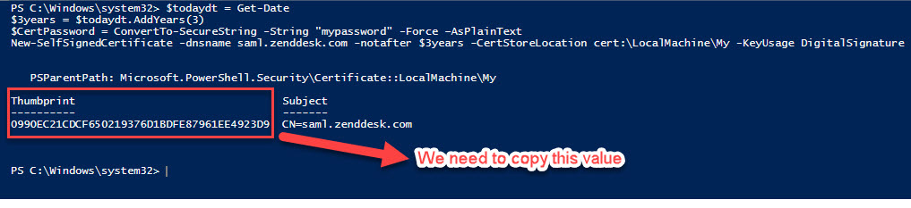
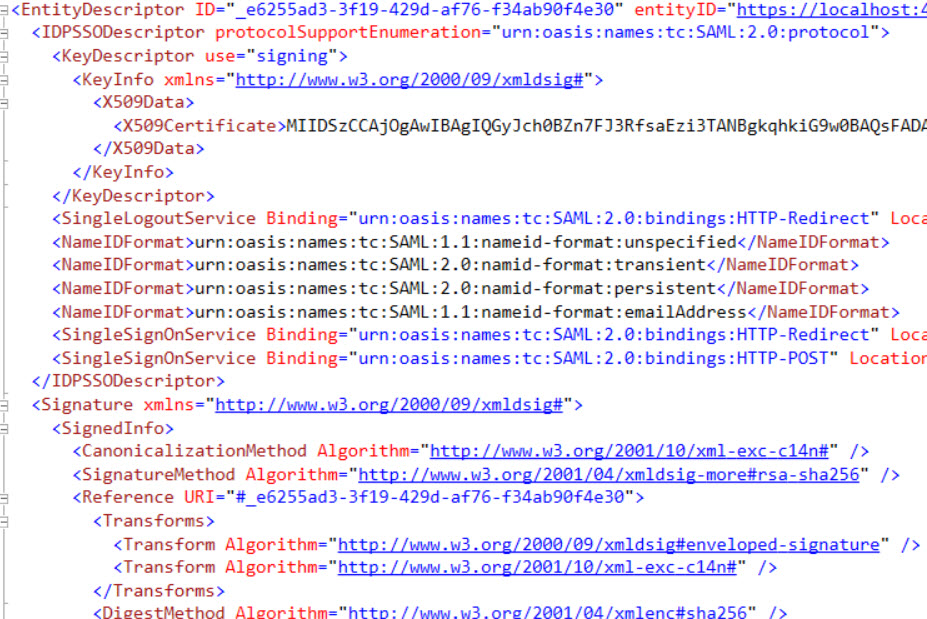
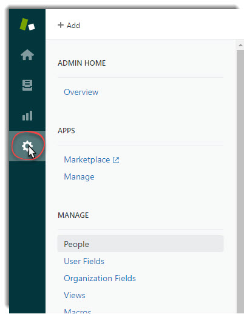
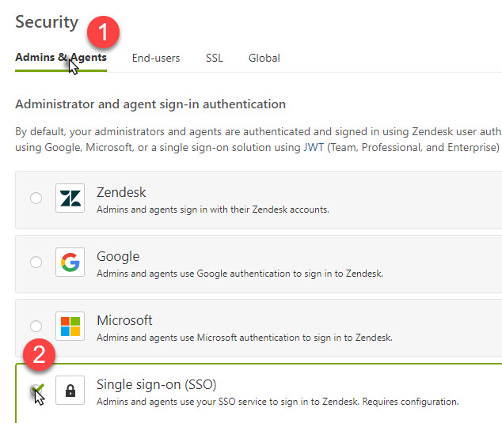
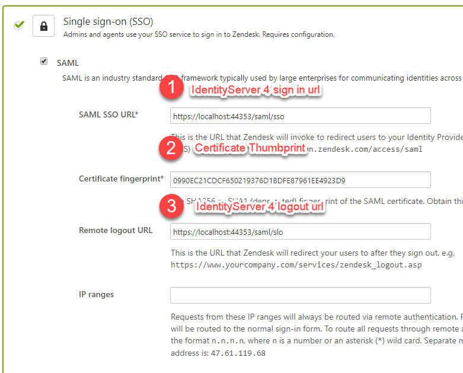
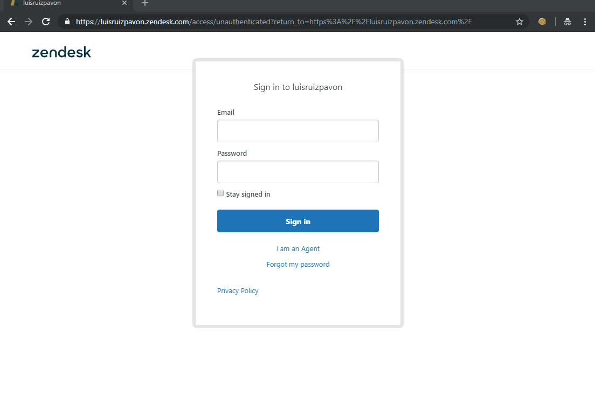

A brief introduction of IdentityServer 4 and SAML 2.0
IdentityServer 4 is an OpenID Connect and OAuth 2.0 framework for ASP.NET 2.x. Actually, these two protocols are also very widely used in the industry to support the best authentication flows for moderns applications. Sometimes, when you are building products you can enable customers to sign in using theirs own corporate network credentials (Google, Azure AD, ADFS…) without having to enter their passwords again (single sign-on) or to avoid create another username/password. This scenario is commonly called “Federation” and enable organizations to have fine-grain control over theirs users accounts- It’s much simpler to manage one login per user than it’s to manage separate logins for each application (Help Desk, CRM, ERP…), for example, in case of one user decides to leave the company, only deleting/blocking his account you are limiting the access to the all federate apps instead of going one by one removing/bloking his account.
Last week, one of our customers asked to me if it could be possible to connect IdentityServer 4 with Zendesk in order to use theirs own users. Zendesk support a variety of SSO options. In our scenario we need Enterprise single sign-on and Zenddesk support two types:
- JSON Web Token
- Secure Assertion Markup Language (SAML)
SAML is an open standard “legacy” protocol for exchanging authentication and authorization data between two parties, in our case between IdentityServer 4 (Identity Provider) and Zendesk (Service Provider). SAML is an XML-based markup language. If you want to read more about this protocol please visit the next link.
There are two types of SAML providers:
-
Identity Provider issues the authentication assertions and send the data with user’s access right to the Service Provider.
-
Service Provider accepts and recieves the authentication assertions from the Identity Provider.
IdentityServer 4 has a license component for SAML 2.0 integration (SAML2P in the Microsoft world). You can request a trial if you want to test it. Identity Server 4 can act as an Identity Provider or as a Service Provider:
Project setup
I’m assuming that you have worked with IdentityServer 4. If not, please read this post by Scott Brady in order to getting started with IdentityServer 4.
The IdentityServer 4 SAML 2.0 is avaliable on NuGet:
Install-Package Rsk.IdentityServer4.Saml
IdentityServer 4 as a SAML 2.0 Identity Provider
Once we have installed Rsk.IdentityServer4.Saml NuGet package, we need to configure it. In your ConfigureServices method, you call to IdentityServer 4:
services
.AddMvc()
.Services
.AddMemoryCache()
.AddIdentityServer()
.AddSigningCredential(
new X509Certificate2(<your certificate>))
.AddSamlPlugin(options =>
{
options.Licensee = "<your licensee>";
options.LicenseKey = "<your license key>"
options.WantAuthenticationRequestsSigned = false;
})
NOTE You can’t use AddTemporarySigningCredential. The pluging needs a full X509 certificate. If you are developing or testing the component, you can create your own self signed certificate using makecert, OpenSSL, or PowerShell:
$todaydt = Get-Date
$3years = $todaydt.AddYears(3)
$CertPassword = ConvertTo-SecureString -String "mypassword" -Force –AsPlainText
New-SelfSignedCertificate -dnsname saml.zenddesk.com -notafter $3years -CertStoreLocation cert:\LocalMachine\My -KeyUsage DigitalSignature
You should see the following output:

Save the Thumbprint because you’ll need it when we configure our Zendes SSO.
AddSamlPlugin add the necessary services to start receiving SAML Requests and sending SAML Responses. You have to introduce your licensee and your license key, as I told you before you can request a trial of the component.
Finally, we can Configure the pipeline.
app.UseIdentityServer()
.UseIdentityServerSamlPlugin();
If we run our application we should access to the SAML metadata endpoint visiting https://localhost:port/saml/metadata

We are going to configure our Zendesk SAML Provider, we need two things: create the client in IdentityServer 4 (as usual do) and next the create the Service Provider:
.AddInMemoryClients(new List<Client>()
{
new Client {
ClientId = "https://<yoursubdomain>.zendesk.com",
ClientName = "RSK SAML2P Test Client",
ProtocolType = IdentityServerConstants.ProtocolTypes.Saml2p,
AllowedScopes = { "openid", "profile", "email", "zendesk" },
RedirectUris = { "https://<yoursubdomain>.zendesk.com/access/saml" }
}
})
.AddInMemoryServiceProviders(new List<IdentityServer4.Saml.Models.ServiceProvider>()
{
new IdentityServer4.Saml.Models.ServiceProvider
{
EntityId = "https://<yoursubdomain>.zendesk.com",
SigningCertificates = {new X509Certificate2(Path.Combine(Environment.ContentRootPath, "zenddesk.cer"))},
AssertionConsumerServices = { new Service(SamlConstants.BindingTypes.HttpPost, "https://<yoursubdomain>.zendesk.com/access/saml") },
RequireSamlRequestDestination = false,
ClaimsMapping = new Dictionary<string,string>
{
{ JwtClaimTypes.Role, JwtClaimTypes.Role },
{ JwtClaimTypes.Email, JwtClaimTypes.Email },
{ JwtClaimTypes.Name, JwtClaimTypes.Name }
}
}
})
Only for demo purpose we are going to store all information in memory, for production scenarios you should use a persistent store like a RDBMS or similar.
The ClientId and EntityId should be the same and must be the equal to the EntityId used by Zendesk, in this case https://
.AddInMemoryIdentityResources(new List<IdentityResource>
{
new IdentityResources.OpenId(),
new IdentityResources.Profile(),
new IdentityResources.Email(),
new IdentityResource
{
Name = "zendesk",
UserClaims = { JwtClaimTypes.Name, JwtClaimTypes.Email, JwtClaimTypes.Role }
}
})
As you can see we are adding a custom IdentityResource called “zendesk” with some user claims such us name, email and role because Zendesk need them:
The only user data required by Support from your authentication system is the user’s name and email address.
Additionally we are adding the claim role because by default if we not set it by default is set to “end-user” and they can experience some problems when try to access to Zendesk. The user’s role can be set to “user”, “agent”, or “admin”.
It’s time to add our test users. If you are using IdentityServer 4 Quickstart inside the Quicktstart folder there is a class called TestUsers.cs. We are going to add the claim role and set to “agent”:
public class TestUsers
{
public static List<TestUser> Users = new List<TestUser>
{
new TestUser{SubjectId = "818727", Username = "alice", Password = "alice",
Claims =
{
new Claim(JwtClaimTypes.Name, "Alice Smith"),
new Claim(JwtClaimTypes.GivenName, "Alice"),
new Claim(JwtClaimTypes.FamilyName, "Smith"),
new Claim(JwtClaimTypes.Email, "AliceSmith@email.com"),
new Claim(JwtClaimTypes.EmailVerified, "true", ClaimValueTypes.Boolean),
new Claim(JwtClaimTypes.WebSite, "http://alice.com"),
new Claim(JwtClaimTypes.Address, @"{ 'street_address': 'One Hacker Way', 'locality': 'Heidelberg', 'postal_code': 69118, 'country': 'Germany' }", IdentityServer4.IdentityServerConstants.ClaimValueTypes.Json),
new Claim(JwtClaimTypes.Role, "agent")
}
},
new TestUser{SubjectId = "88421113", Username = "bob", Password = "bob",
Claims =
{
new Claim(JwtClaimTypes.Name, "Bob Smith"),
new Claim(JwtClaimTypes.GivenName, "Bob"),
new Claim(JwtClaimTypes.FamilyName, "Smith"),
new Claim(JwtClaimTypes.Email, "BobSmith@email.com"),
new Claim(JwtClaimTypes.EmailVerified, "true", ClaimValueTypes.Boolean),
new Claim(JwtClaimTypes.WebSite, "http://bob.com"),
new Claim(JwtClaimTypes.Address, @"{ 'street_address': 'One Hacker Way', 'locality': 'Heidelberg', 'postal_code': 69118, 'country': 'Germany' }", IdentityServer4.IdentityServerConstants.ClaimValueTypes.Json),
new Claim("location", "somewhere"),
new Claim(JwtClaimTypes.Role, "agent")
}
}
};
}
After this, we need to add these test users to IdentityServer 4 in our ConfigureServices method:
.AddTestUsers(TestUsers.Users);
If you want to see our Startup.cs class complete please visit this link.
Zendesk as a SAML 2.0 Service Provider
We are going to configure Zendesk as a SAML 2.0 Service Provider. I recommend you to read Enabling SAML single sign-on (Professional and Enterprise) article if you want to know more in depth.
To enable SSO in Zendesk:
- Click the Admin icon () in the sidebar, then select Security from the Settings category.

- Select Admins & Agents or End-users whatever you want enable and select the Single sign-on (SSO) option, then click on SAML checkbox:

And configure your settings:

For the Certificate fingerprint field you should used the thumbprint of the certificate that we created in the previous steps*
It’s time to test it! Let me show you:

Conclusion
In this post I’ve tried to show you a way of configuring SSO between IdentityServer 4 and Zendesk using a “legacy” protocol like SAML 2.0.

Comments